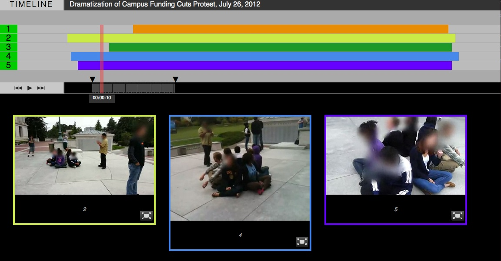

Using Rashomon
Rashomon's main interface is essentially a timeline. Each overlapping colored bar represents a video, with its position determined by when it starts and ends relative to each other.
The translucent red bar that extends through the timeline is the playhead; it can be dragged around to scrub the current position.
The buttons to the left toggle play/pause and seek to the beginning or end of the selected portion.
The two black triangles on the lower timeline allow you to select a loop, in order to better analyze a specific portion of the chronology.
The green numbers to the left can be used to toggle videos on and off.
The colored outlines on the videos below correspond to the colored bars above.
Videos can be played fullscreen; this will pause the action underneath.
You can watch an annotated video of Rashomon in action below: